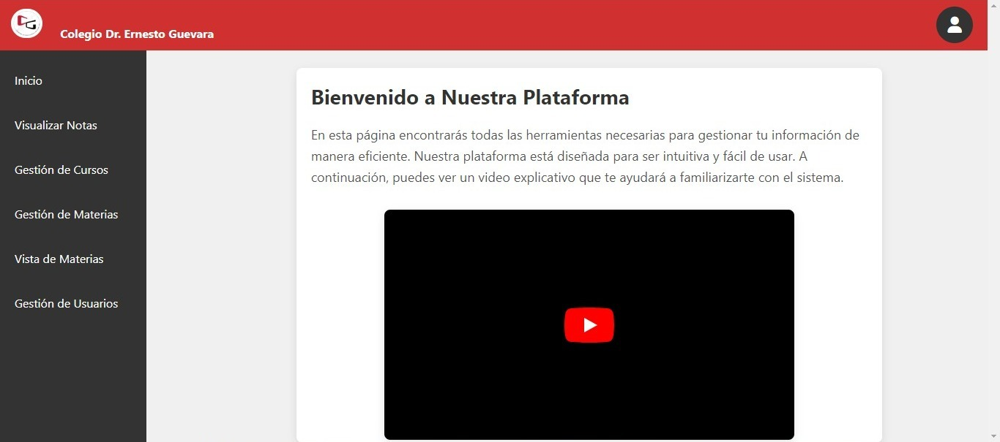

Proyectos
Para ver mas a profundidad mis proyectos puede Visitar mi github
StarTech

Proyecto de curso de desarrollo web, es un e-commerce orientado a productos tecnologicos
Repositorio StarTechTPI
Proyecto Final escolar, el cual cubre una gran variedad de aspectos tecnologicos
Proyecto TPI